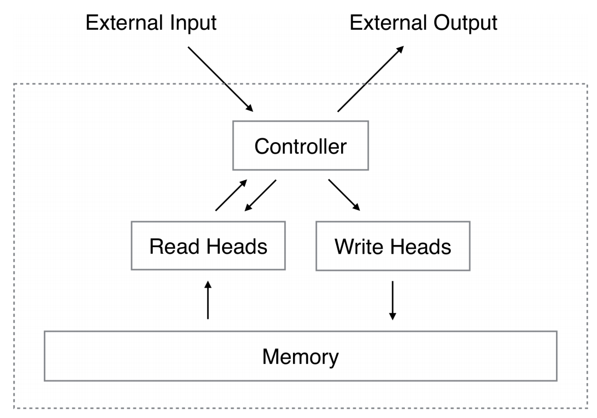

(03) Model-based Meta Learning
- NTM (Neural Turing Machines)
- MANN (Memory-Augmented Neural Networks)
- SNAIL (Simple Neural Attentive Meta-Learner)
Main Concept of Model-based Meta-Learning
In Model-based Meta Learning, learning is mainly performed using a recurrent neural network such as Long Short-Term Memory (LSTM).
How Model-based Meta-Learning works?
It involves changing internal dynamics, such as the hidden state of a recurrent neural network, with the goal of learning it well.
The core idea of Model-based Meta Learning is to train $D_{\textnormal{meta-train}}$ data as we would typically do in conventional supervised learning, using recurrent neural networks like LSTM.data as we would typically do in conventional supervised learning, using recurrent neural networks like LSTM.
\[\begin{equation} D_{\textnormal{meta-train}} = \{(D^{\textnormal{train}}_1, D^{\textnormal{test}}_1), (D^{\textnormal{train}}_2, D^{\textnormal{test}}_2), \cdots, (D^{\textnormal{train}}_n, D^{\textnormal{test}}_n)\} \end{equation}\]{kind=link}
LSTM Architecture of Meta Learning
Meta-Learning LSTM architecture
{kind=link}
The goal of Meta Learning is for the accuracy of the $D^{\textnormal{test}}_{i}$ on the $i$-th task to be high.
\[\begin{equation} \max_{\theta}\sum_{T_{i}}\sum_{(x,y)\sim D^{\textnormal{test}}_i}\log g_{\varphi_i} (x|y)\end{equation}\] \[\begin{equation} \min_{\theta}\sum_{T_i}L(f_\theta(D^{\textnormal{train}}_i), D^{\textnormal{test}}_i \end{equation}\]{kind=link}
Learning Flow of the Model-based Meta Learning
- Sampling the $T_i$ from the task distribution $p(T)$.
- Separate to $D_{i}^{\textnormal{train}}$ and $D_{i}^{\textnormal{test}}$ of the task $T_i$.
- Calculate the task parameter $\phi_i$ \[\begin{equation} \phi_i \leftarrow f_{\theta}(D_i^{\textnormal{train}}) \end{equation}\]
- Update $\theta$ through the $\nabla_{\theta}L(\phi_i, D_i^{\textnormal{test}})$.
NTM (Neural Turing Machines)
- As sequences get longer, recurrent neural networks face the problem of gradient vanishing, where past memories are diluted.
- The authors proposed a method to address issues like gradient vanishing and memory capacity problems in recurrent neural networks by introducing an addressable and static infinite external memory.
 Architecture of Neural Turing Machine.
{kind=link}
External Memory
- The external memory of NTM is stored in the form of an $N\times M$ matrix, where each column represents a memory location.
- $N$ represents the capacity of the external memory.
- $M$ represents the dimension of each memory location.
- The external memory undergoes slight changes whenever new inputs are received by the heads of the controller.
Memory Read
\[\begin{equation} \sum_i w_t (i) = 1, 0 \leq w_t (i) \leq 1, \forall i \end{equation}\] \[\begin{equation} r_t \leftarrow \sum^{N}_{i=1}w_t (i)\mathbf{M}_t(i) \end{equation}\]Memory Write
\[\begin{equation} \tilde{M}_t(i) \leftarrow M_{t-1}(i) \odot[\mathbf{1}-w_t(i)e_t] \end{equation}\] \[\begin{equation} M_t(i) \leftarrow \tilde{M}_{t}(i) + w_t (i) a_t \end{equation}\]Calculate Weight
Content-based Weights
\[\begin{equation} K[k_t, M_t(i)] = \frac{k_t \mathbf{\cdot} \mathbf{M}_t(i)}{\left\| k_t \right\| \mathbf{\cdot} \left\| \mathbf{M}_t (i) \right\|} \end{equation}\] \[\begin{equation} w^c_t(i) \leftarrow \frac{\exp(\beta_t K[k_t, M_t (j)}{\sum^N_{j=1}\exp(\beta_tK[k_t, M_t (j)]} \end{equation}\]Linear Interpolation
\[\begin{equation} w^g_t \leftarrow g_t w^c_t + (1-g_t)w_{t-1} \end{equation}\]Rotational Shift
\[\begin{equation} \tilde{w}_t(i) \leftarrow \sum^{N-1}_{j=0}w^g_t (j)s_t (i-j) \end{equation}\]Sharpening
\[\begin{equation} w_t(i) \leftarrow \frac{\tilde{w}_t(i)^{\gamma_t}}{\sum_j\tilde{w}_t(j)^{\gamma_t}} \end{equation}\]